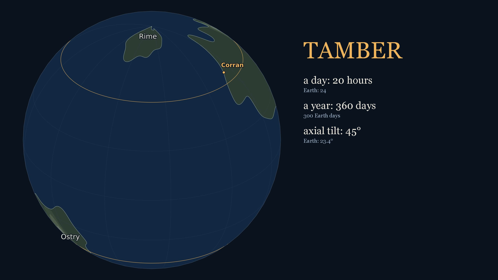
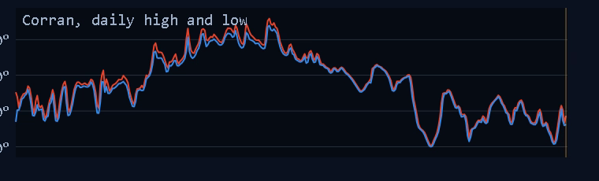
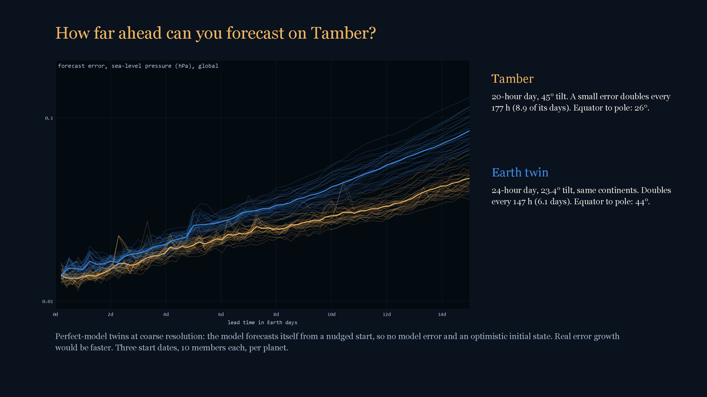
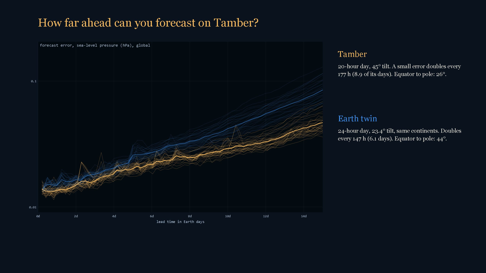

The weather forecast for a planet that isn't Earth
Tamber has a 20-hour day, a 360-day year and an axis tilted 45 degrees. I gave those numbers and a hand-drawn set of continents to a real atmosphere model, ran it under that sun for four planet years until the ocean settled, and then did what a weather service does: a year of maps, a ten-member forecast for one town, and a measurement of how fast a forecast falls apart there.
The planet
Twice Earth's tilt moves the polar circles down to 45 degrees of latitude. Corran sits on the west coast of the northern continent, Caul, at 50 north, the latitude of Vancouver or Prague, and is well inside the circle. Every summer the sun stops setting there for 54 days, and every winter it stops rising for 54 days.

A year at Corran
Drag through the year. Every frame is the model's own state, five hours apart, drawn as a broadcast map: surface temperature, rain in green and blue, snow in white, isobars every 4 hPa, the night side shaded. The inset globe shows where the sun is.

The forecast
Issued on day 181. I took that day's atmosphere, made ten copies, gave each a smooth random temperature field of one degree (24 random waves up to wavenumber 8, the size and shape of an analysis error), and ran all ten forward for 30 Earth days. Where the ten agree the forecast is confident; where they fan out it is not. Then I laid the unperturbed run, the "truth", on top.

How far ahead can you forecast on Tamber?
The same experiment, three start dates per planet, ten members each, with a tiny nudge (a hundredth of a degree) so the growth starts from nearly nothing. The error is the global root-mean-square difference in sea-level pressure between each member and the unperturbed run. On Tamber a small error doubles every 177 hours (8.9 of its days). On an Earth-like twin with the same continents, 24-hour day and 23.4 degree tilt, it doubles every 147 hours.

This is a perfect-model twin experiment at coarse resolution: the model forecasts itself from a nudged start, so there is no model error and the starting error is unrealistically small. It is an upper bound on predictability, and the doubling time is measured over the early exponential stretch only. As a check, the same ensembles with a 1 K smooth nudge from one date each: at 15 days the Earth twin's pressure error was 5.4 hPa against 2.9 on Tamber, the same ordering at a hundred times the amplitude.
How it was made
- SpeedyWeather.jl 0.22 on Julia 1.13: a primitive-equation atmosphere, spectral T63 (about 200 km at the equator), 8 vertical layers, with a 30 m slab ocean and a bucket land surface. The planet is one constructor call: rotation, day length, year length, tilt. Seasons come from the sun, nothing is prescribed.
- The continents are a closed-form noise field, the same formula in Julia and Python, so the model's mask and the map's coastline agree. Two mountain ridges, one on each large continent, up to about 3,500 m.
- Spin-up: 1,200 Earth days (4 Tamber years) from rest. The global ocean was still warming by about 0.3 degrees a year at the end, so the climate is close to but not exactly settled.
- The year: 12 restart segments, output every 5 hours, 1,440 states. Maps with cartopy and matplotlib, film with cairo, narration by Kokoro. Both planets, all forecasts and the film rendered on one desktop in about four hours.
- Grid-point white noise barely grows in this model at any amplitude: the hyperdiffusion removes it before the large scales feel it. A 1 K white-noise bulletin gave Corran a spread of 0.1° at day 3. The bulletin above uses the smooth field instead; the doubling times use the 0.01 K white-noise runs, where the growth that survives is the large-scale part.
- Things I would do with another day: fronts on the map, a higher resolution, and a longer run so the ocean truly settles. The Earth twin's year chain is 360 days, not 365.
Code and run driver: the repo, folder day60. Runs are not committed (about 6 GB of netCDF).